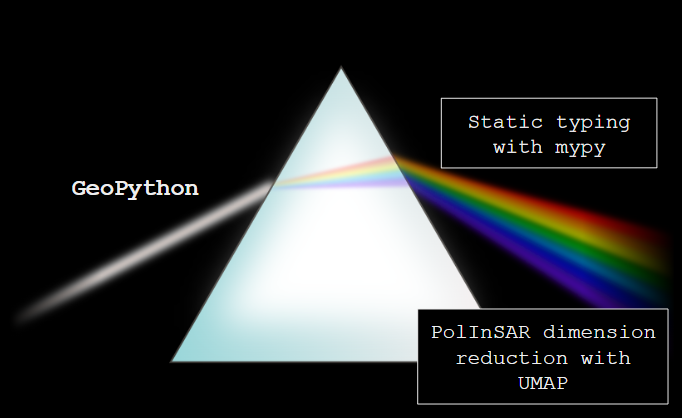
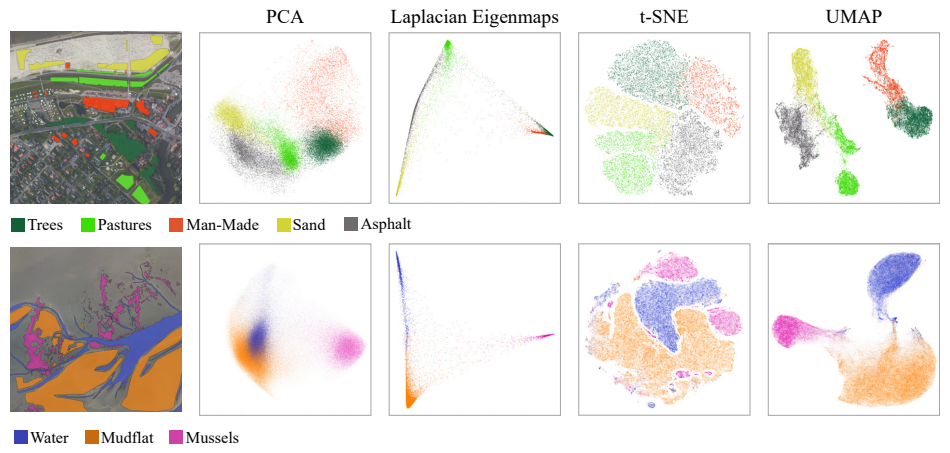
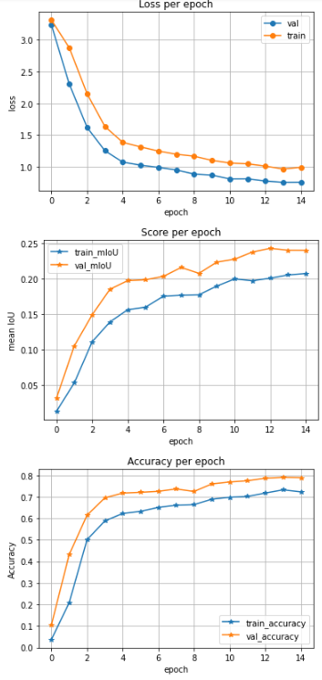
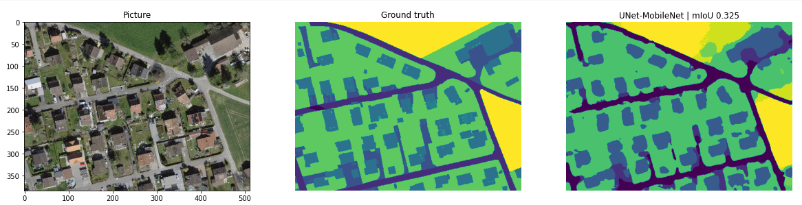
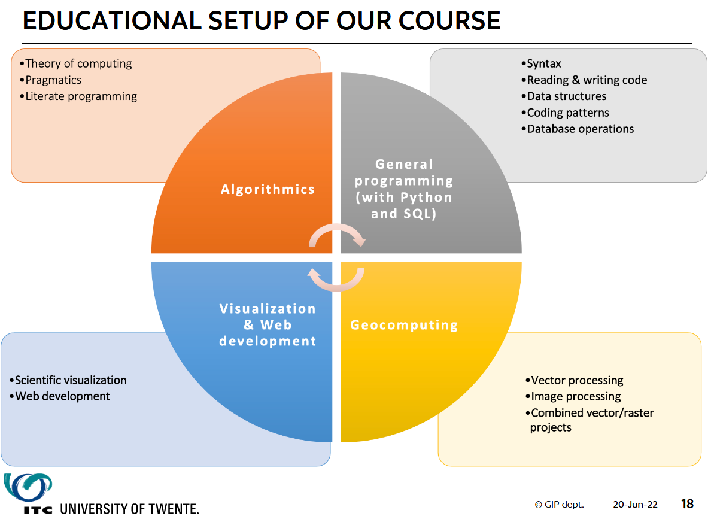

Highlights of GeoPython 22
STATUS: DRAFT
Introduction
GeoPython 2022 took place in Basel, Switzerland, from 20th to 22nd June. As for many, it was my first conference in a while. I attended with two hats - as a student of Earth Observation (EO) and geo-data science, and as a software engineer working on a semantic datacube platform.
The venue was the FHNW1 campus - an epic, inside-out-brutalist, Escher-tinged building. Think, Techno Valhalla.
From a high-level view, the most striking thing about the conference was the sheer variety of the talks, especially given its size (approx. 100 on-site attendees). Talks ranged from software engineering fundamentals (static typing with mypy, by Michal Gutowski) to cutting edge applied research (Sylvia Schmitz’s talk on using UMAP2 for PolInSAR3).

Note: I’m quite new to the geospatial field - I have a background mainly as a software engineer, with some signal processing knowledge - so take some of these opinions with a pinch of salt.
Personal Highlights
I have limited time, so these personal highlights are the most relevant to my work or studies. Rather than give a talk-by-talk run-through, I will discuss the content by theme, because sometimes multiple talks pulled on different threads of the same idea. I thoroughly enjoyed all the sessions I attended, and learned something valuable from each one.
Types and Validation (Software Engineering)
An interesting discussion arose regarding static-typing (with mypy) vs runtime-typing (with typeguard). In summary, runtime type-checking has the strongest guarantees of safety, but the performance hit is a tradeoff. I’ve gone through a similar decision process in the TypeScript world and my conclusions were that the optimal solution is probably to use a bit of both - apply validation at the IO boundaries5, and rely on static-typing for the rest of the code.
Pydantic was brought up in the QGreenland talk, as Trey Stafford discussed the evolution of their custom configuration solutions6. This is a library for configuration management using Python files, and could be very useful. Though, care has to be taken with user-supplied config files from a security perspective.
Scaling Up (Software Engineering)
As we’re effectively working with ♾GB of data, performance-tuning and scaling is an important topic, and many of the talks were about some aspect of this. At single-machine scale, Numba was introduced as part of Brendan Collins’ talk Who Said Wrangling Geospatial Data at Scale was Easy?. Numba is a just-in-time compiler which compiles functions as though they were C code, rather than interpreted line-by-line as per regular Python7. There are further features to enable multi-processing and running code on CUDA-capable GPUs8. This however, was part of something bigger: Xarray-spatial combines xarray, Numba and Dask to perform large-scale distributed raster analysis.
A valuable lesson on xarray came earlier from Donjeta Runjeva in her talk on SEGES’ Danish agricultural data cube: xarray works on regular grids, which multi-temporal satellite imagery does not always nicely fit into, e.g., an area of interest spanning boundaries of tiles captured on different days.
Moving into the vector domain, a major development from the GeoPandas team is Dask-GeoPandas. This offers a similar API to GeoPandas, but behind-the-scenes builds a Dask task graph and performs spatial partitioning using space-filling curves9. It’s still being built; there are currently some limitations, which were well explained, including:
- Accurately determining memory requirements for the scheduler is still a work-in-progress.
- Operations that span partitions, i.e., require some overlap, require some manual work.
There was a workshop on Day 3, where we got to try this out. There is a Jupyter notebook available that anyone can try (though it can take a little while to get the environment set up): Dask-GeoPandas introduction tutorial.
PolInSAR Analysis (Remote Sensing)
Being from the North of England, where a cloud-free day is a rare treat, weather-agnostic synthetic aperture radar (SAR) has become one of my favourite topics. Interpreting SAR data is notoriously difficult10, and squeezing every drop of information out of an instrument’s available measures is a useful and interesting problem area. Sylvia Schmitz’s talk on exploratory analysis and visualization of high-dimensional remote sensing data introduced some fascinating approaches using Uniform Manifold Approximation and Projection (UMAP) - a non-linear dimension reduction algorithm. I would need to spend some more time to fully understand the details, but Sylvia demonstrated being able to transform a multi-band, quad-pol SAR11 feature space containing ~100 dimensions into clearly separated clusters representing various land-cover classes. Full details are in her paper, Evaluating uniform manifold approximation and projection for dimension reduction and visualization of PolInSAR features.

Some other related resources:
Crop Classification with Similarity Metrics (Remote Sensing)
Dimo Dimov from Geocledian presented an approach for crop classification using multi-spectral imagery, which instead of classic global indexes such as NDVI or convolutional approaches, used localised similarity metrics within a 5km radius. This may be less sensitive to changes in image characteristics such as world region or atmospheric conditions, or perform better than typical spectral learning approaches, wrt. accuracy or computation requirements. A corresponding paper is available: Classification of remote sensing time series and similarity metrics for crop type verification. From the abstract: “Overall, the achieved classification accuracy for more than 67 crop types scores more than 80%”.
Deep Learning/Neural Networks
Adrian Meyer and Martin Christen hosted the workshop, Applied Semantic Segmentation for Large Scale Aerial Imagery, which took us through the end-to-end process of labelling, training and running inferences of a GPU-accellerated PyTorch deep learning model for the classification of 10cm aerial imagery12. There was an introduction to segments.ai for labelling and managing images, and a Colab notebook took us through the rest of the steps.


DL4DS (Deep Learning for empirical DownScaling) was presented by creator Carlos Gonzalez, and is a framework allowing bespoke DL down-scaling/super-resolution networks to be constructed using building blocks from different techniques. It’s designed with climate-modelling in mind but should be applicable to other application areas.
Teaching Programming to Geographers
Geospatial analysis and communication involves using complex, highly abstracted tools and libraries. I grew up frying electronic components for fun, and it’s unrealistic to expect everyone to have a similar background. So, I was very interested to hear from Barend Köbben about the teaching methodology developed for ITC’s masters programme: Which parts of computer science and software engineering to include, and which to skip; the make-up of assignments and exercises.
Barend has kindly allowed me to include one of the key slides:

Some Other Good Stuff
Anita Graser’s MovingPandas: Adds multi-temporal capabilities to GeoPandas, supporting things like trajectory mapping. I think this could be very useful for habitat mapping13.
pygeofilter, from Fabian Schindler: Like a Babel Fish for spatial filter languages and APIs.
Johannes Uhl’s historical Map Processor: A pipeline to mosiac USGS historical maps and allow them to be spatially queried as though they were a satellite timeseries starting in the 1800s.
Wrapping up
Huge thanks to the @GeoPythonConf team and the presenters, and my department, Z_GIS, for funding the trip.
Please get in touch with any questions or corrections, or if I’ve mentioned you and would prefer a different profile link to the one I chose.
About
Made with Quarto. Source: TODO.
Footnotes
University of Applied Sciences and Arts Northwestern Switzerland↩︎
Uniform Manifold Approximation and Projection for Dimension Reduction↩︎
Based on Prism-rainbow-black.svg: Suidroot, Sceptre, CC BY-SA 3.0↩︎
I.e., verify the response from web request or content of a read file has the expected structure↩︎
In which JSON and YAML were short-lived characters.↩︎
Numba - Parallelize Your Algorithms↩︎
E.g., the Hilbert Curve (TimSauder, Creative Commons CC BY-SA 4.0)↩︎
{kind=link}
{kind=link}